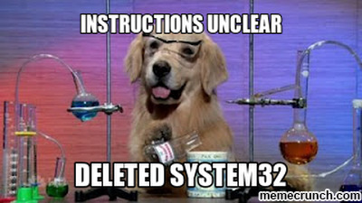

# Intro ### who: Eugen Anghel ### what: I build stuff with code, mostly backend ### where: software architect at Endava --- class: center, middle # We can't use Docker <br>in production! ??? Everybody starts with this, but as we'll see, you don't have to! (not at first) --- ## Common misconceptions: * Docker is all-or-nothing * Docker complicates things * Docker doesn't work on Windows * Docker is only useful in Production * Docker is for Ops ??? Not saying that Docker is not complicated, it's just simpler and more sane than the alternatives Docker works on windows just as good as Git. It has its quirks and I'd rather be using Linux, but the issues that exist are minor. --- class: center, middle ## Greatest docker advantage: # Reproducibility ??? Reproducibility: reproduce results obtained on one computer (yours?) on other computers: your colleague's, the dev server, or even prod --- ## Everything else revolves around reproducibility: ### Isolation ### Portability ### Automation ### Self-documenting --- ## So what's before production? ### Dev ➜ CI ➜ QA ➜ Demo ➜ <s style="color: red">Prod</s> --- ## So what's before production? - research (dev) - development tools - building the code & unit tests (dev machine, CI server) - deploying/configuring a full system (dev, qa, demo) - running the system (dev, qa envs, etc.) - integration testing (dev, qa) - end-to-end testing (dev, qa) - performance testing (dev, qa, demo) ??? research = evaluating some tech That's a lot So first thing to notice is that everything needs to be done by the developers on their own environment! People are usually (negatively) suprprised by this, but only because it's been hard to do in the past. Remember branches before git, in svn? --- ## Research ### Evaluating dbs, web server, caches, etc: docker run and chill #### Redis: `docker run -p 6379 redis:alpine` #### memcached: `docker run -p 11211:11211 memcached` #### Postgres: ``` docker run -p 8432 \ -e POSTGRES_DB=myapp \ -e POSTGRES_PASSWORD=31337 \ -e POSTGRES_USER=myuser \ postgres:9.6-alpine ``` --- ## Development Tools ### Services useful to the whole team #### Gitea `docker run --name demo_gitea -p 3000:3000 gitea/gitea:1.3` #### Jenkins: `docker run -p 8080 jenkins/jenkins:2.76-alpine` #### Nginx ``` docker run --name demo_nginx \ -p3001:3001 \ -v $(greadlink -f nginx.conf):/etc/nginx/nginx.conf \ nginx:1.13.6-alpine ``` ??? Most of the images create persistent volumes automatically, a blessing and a curse --- class: center, middle # Demo Time! ??? nginx: docker rm -f -v demo_nginx; docker run --name demo_nginx -p3001:3001 -v $(greadlink -f nginx.conf):/etc/nginx/nginx.conf nginx:1.13.6-alpine gitea: docker run --name demo_gitea -p 3000:3000 gitea/gitea:1.3 jenkins: no demo, takes *way too long* to start --- ## Development Environment #### Joining a project is not all fun * 2 Node versions * 2 JDK versions * Python 2.7/3.5/3.6 * 3 databases * 1 cache server * 1 auth server * 17 config files to change --- ## Development Environment #### The dreaded "How to configure your environment" page  ??? "multiple projects" can mean multiple (micro)services Some people have scripts, but it's impossible to build something that works across all envs. Vagrant can solve many of these issues at the price of VMs how to configure env page: rarely updated and never complete --- ## Development Environment #### Have you ever: * worked as a backend dev, but had to install Node? * worked as a frontend dev but had to install Java? #### Upgrade one tool -> put your colleagues to work --- ## Development Environment: Dependencies ### docker-compose up and chill ``` version: '3' services: mysql: image: mysql:5.7 ports: - 3306:3306 environment: - MYSQL_ROOT_PASSWORD=dbpass - MYSQL_DATABASE=dev mongo: image: mongo:3.0 ports: - 27017:27017 redis: image: redis:4-alpine ports: - 6379:6379 ``` --- ## Development Environment: Dependencies ### Also run clients with Docker, no need to install those either: ### Mongo `docker run --rm -it --network demo_default mongo:3.0 mongo --host demo_mongo_1` ### Redis `docker run --rm -it --network demo_default redis:4-alpine redis-cli -h demo_redis_1` ??? Clients: Available for most dependencies --- class: center, middle # Demo Time! ??? docker-compose -f devel-env-compose.yml -p demo up docker run --rm -it --network demo_default mongo:3.0 mongo --host demo_mongo_1 docker run --rm -it --network demo_default redis:4-alpine redis-cli -h demo_redis_1 --- ## Development Environment: Building ### Create a build image for each tech stack: * jdk8 * jdk7 * node7 ### To build, just start a container with the build image ### The result of the build is a docker image #### Gotchas: * mount repo cache directories as volumes * docker in docker is bad, just share the docker socket --- ## Development Environment: Building Build compose file: ``` version: '3' services: build-java-app: build: context: ./java-builder dockerfile: Dockerfile image: demo-java-builder volumes: - ./java-app:/src - ./gradle-home:/root - /var/run/docker.sock:/var/run/docker.sock ``` Builder image Dockerfile ``` FROM java:8-jdk-alpine USER root COPY run.sh / RUN apk update && apk add --no-cache libstdc++ bash docker ENTRYPOINT /bin/bash /run.sh ``` --- class: center middle # Demo Time! ??? docker-compose -f build-compose.yml -p demo up --build docker image ls docker run -p8080:8080 --name demo-java-app demo-java-app --- ## Development Environment: Docker Benefits * Easier to join a project * Easier to switch between multiple versions * Autonomy: free upgrades to tooling * Focus on own tech stack * Self-Documenting * Versioning ??? Documentation: compose file is executing documentation; never gets outdated Autonomy from other devs that need to build & run your code, VERY IMPORTANT, everyone focuses on their own tech stack Versioned: per branch, easy experimenting; wiki pages are not per branch On the downside, you can no longer use the classical excuse: "Yesterday I configured my environment" --- class: center, middle # You also get more responsibilities<sup>*</sup> .footnote[<sup>*</sup>with great responsibility comes great power] ??? responsibilities: maitaining the build images, dependency compose files --- ## Integration Testing #### Postgres, MySQL, Redis * start the container * run tests * stop & delete the container #### Gotchas * Maven/Gradle have Docker plugins * Bash + Docker CLI is usually easier<sup>*</sup> * Even with Docker, isolation can be tricky: * Random ports are your friend * Separate networks for each build * Make sure you cleanup .footnote[<sup>*</sup>if you're willing to learn bash] --- ## End-To-End Testing #### Just like integration tests: * Start a Selenium server container * Run the tests * Delete the container #### Gotchas * Networking issues can pop up; simpler to either * deploy the app itself as container(s) * use the host network ??? Perhaps one selenium container for each browser Networking issues: the cotnainer need to be able to access the host if the app is running on the host. --- class: center, middle # Demo Time! ??? docker-compose -f e2e-compose.yml -p demo up --build selenium-runner; docker-compose -f e2e-compose.yml -p demo down --- ## Continous Integration #### Dev environment woes, take 2: * 2 Node versions * 2 JDK versions * etc. etc. etc × number_of_projects * Devs need to bargain with Ops * Upgrading project X breaks project Y #### Solution: Build in containers * Use the same build images metioned previously * ...extra incentive to create them #### Isolation gives you Autonomy (from the other teams *and* from Ops) --- ## Deployments #### Using Docker for deployments: * Same advantages as above: Isolation, Autonomy, Portability, Reproducibility * Allows Ops to focus on Ops things #### Gotchas * Ideally you should be using the same deployment method everywhere (dev/demo/stage/prod) * Switching to Docker on everything except prod will most likely cause things to break * ..but if already broken.. `¯\_(ツ)_/¯` --- ## Summary #### Benefits * Reproducible * Isolation * Portable * Executable documentation #### Most useful in * Heterogenous environments * Multiple autonomous teams * Many external service dependencies * Complex systems with many running parts --- ## Summary #### Gotchas * Not enough minerals * Windows * Cleanup (container, images, volumes) * Docker in Docker * Share caches (e.g library repo caches) * The Hub search is broken ### Don't be afraid to make your own images! --- class: center middle # Mulțumesc! ### Thanks / Merci / Danke